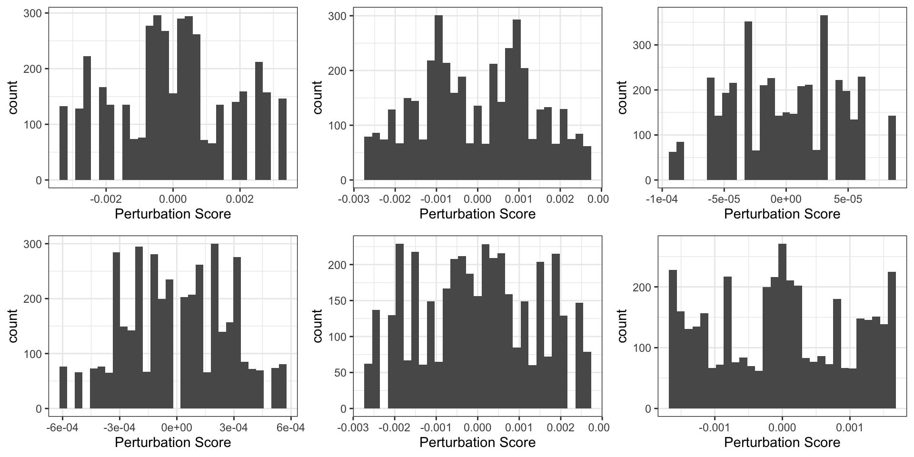

Last updated: 2022-04-04
Checks: 6 1
Knit directory:
T47D_ZR75_DHT_StrippedSerum_RNASeq/analysis/
This reproducible R Markdown analysis was created with workflowr (version 1.7.0). The Checks tab describes the reproducibility checks that were applied when the results were created. The Past versions tab lists the development history.
The R Markdown is untracked by Git. To know which version of the R
Markdown file created these results, you’ll want to first commit it to
the Git repo. If you’re still working on the analysis, you can ignore
this warning. When you’re finished, you can run
wflow_publish to commit the R Markdown file and build the
HTML.
Great job! The global environment was empty. Objects defined in the global environment can affect the analysis in your R Markdown file in unknown ways. For reproduciblity it’s best to always run the code in an empty environment.
The command set.seed(12345) was run prior to running the
code in the R Markdown file. Setting a seed ensures that any results
that rely on randomness, e.g. subsampling or permutations, are
reproducible.
Great job! Recording the operating system, R version, and package versions is critical for reproducibility.
Nice! There were no cached chunks for this analysis, so you can be confident that you successfully produced the results during this run.
Great job! Using relative paths to the files within your workflowr project makes it easier to run your code on other machines.
Great! You are using Git for version control. Tracking code development and connecting the code version to the results is critical for reproducibility.
The results in this page were generated with repository version 429b67a. See the Past versions tab to see a history of the changes made to the R Markdown and HTML files.
Note that you need to be careful to ensure that all relevant files for
the analysis have been committed to Git prior to generating the results
(you can use wflow_publish or
wflow_git_commit). workflowr only checks the R Markdown
file, but you know if there are other scripts or data files that it
depends on. Below is the status of the Git repository when the results
were generated:
Ignored files:
Ignored: .Rhistory
Ignored: .Rproj.user/
Untracked files:
Untracked: analysis/t47d_sSNAPPY.Rmd
Untracked: analysis/zr75_sSNAPPY.Rmd
Untracked: data/gsTopology.rda
Untracked: output/t47d_permutedscore.rds
Untracked: output/zr75_permutedscore.rds
Unstaged changes:
Modified: analysis/_site.yml
Modified: output/T47D_DHT_StrippedSerum_RNASeq_logCPM.tsv
Modified: output/T47D_DHT_StrippedSerum_RNASeq_topTable.tsv
Modified: output/T47D_dge.rds
Modified: output/ZR75_DHT_StrippedSerum_RNASeq_logCPM.tsv
Modified: output/ZR75_DHT_StrippedSerum_RNASeq_topTable.tsv
Modified: output/ZR75_dge.rds
Modified: output/genesGR.rds
Note that any generated files, e.g. HTML, png, CSS, etc., are not included in this status report because it is ok for generated content to have uncommitted changes.
There are no past versions. Publish this analysis with
wflow_publish() to start tracking its development.
library(tidyverse)
library(yaml)
library(scales)
library(pander)
library(glue)
library(BSDA)
library(cowplot)
library(ggfortify)
library(magrittr)
library(ggrepel)
library(DT)
library(cqn)
library(AnnotationHub)
library(ensembldb)
library(sSNAPPY)panderOptions("table.split.table", Inf)
panderOptions("big.mark", ",")
panderOptions("missing", "")
theme_set(theme_bw())as_sci <- function(p, d = 2, min = 0.01){
fmt <- glue("%.{d}e")
new <- character(length(p))
new[p > min] <- sprintf(glue("%.{d + 1}f"), p[p > min])
new[p <= min] <- sprintf(fmt, p[p <= min])
new
}config <- here::here("config/config.yml") %>%
read_yaml()
suffix <- paste0(config$tag)
sp <- config$ref$species %>%
str_replace("(^[a-z])[a-z]*_([a-z]+)", "\\1\\2") %>%
str_to_title()Post-normalisation DGEList was loaded in.
dge <- here::here("output/ZR75_dge.rds") %>%
read_rds()
logCPM <- read_tsv(here::here("output/ZR75_DHT_StrippedSerum_RNASeq_logCPM.tsv"))
logCPM <- logCPM %>%
dplyr::select(starts_with("GLL"), "gene_id")ah <- AnnotationHub() %>%
subset(rdataclass == "EnsDb") %>%
subset(str_detect(description, as.character(config$ref$release))) %>%
subset(genome == config$ref$build)
stopifnot(length(ah) == 1)
ensDb <- ah[[1]]
genesGR <- read_rds(here::here("output/genesGR.rds"))logCPM$gene_id <- mapIds(ensDb, logCPM$gene_id , "ENTREZID", keytype = "GENEID")
# Remove genes that couldn't be matched to entrez IDs
logCPM <- logCPM[!is.na(logCPM$gene_id),]
logCPM <- logCPM[!duplicated(logCPM$gene_id),]
logCPM <- logCPM %>%
column_to_rownames("gene_id")Weighted single sample logFCs were computed from the logCPM matrix.
metadata <- dge$samples %>%
dplyr::rename(treatment = treat)
weightedFC <- weight_ssFC(logCPM, metadata, factor = "rep", control = "Vehicle")Pathway topologies of KEGG pathways were retrieved.
# weightedAdjMatrix(database = "kegg", outputDir = "data/gsTopology.rda")
load(here::here("data/gsTopology.rda"))313 KEGG pathways were retrieved.
Raw single sample perturbation scores for each treated sample each KEGG pathway were calculated.
ssPertScore <- perturbationScore(weightedFC$logFC, gsTopology)Null distribution of perturbation scores were generated through 1000 rounds of sample label permutations.
# permutedScore <- generate_PermutedScore(
# logCPM = logCPM,
# numOfTreat = 2, NB = 1000,
# gsTopology = gsTopology,
# weight = weightedFC$weight
# )
# write_rds(permutedScore, here::here("output/zr75_permutedscore.rds"))
permutedScore <- read_rds(here::here("output/zr75_permutedscore.rds"))Becusae the samll number of samples, the null dsitributions are close to but not exactly normally distribution.
pl <- permutedScore %>%
keep(~all(.!=0)) %>%
.[sample(seq_along(.), 6)] %>%
lapply(
function(x){
ggplot(mapping = aes(x)) +
geom_histogram() +
xlab("Perturbation Score")
}
)
plot_grid(plotlist = pl, nrow = 2)
Raw perturbation scores were converted to robust z-scores based on
the median and MAD derived from the null distributions. A two-side
p-value was computed for each z-score and corrected for multiple
testings. None of the indiviudal-sample pathway perturbation score had a
FDR < 0.05.
normalisedScores <- normaliseByPermutation(permutedScore, ssPertScore)
normalisedScores %>%
dplyr::filter(adjPvalue < 0.05)[1] gs_name MAD MEDIAN sample tA robustZ pvalue
[8] adjPvalue
<0 rows> (or 0-length row.names)formatP <- function(p, m = 0.0001){
out <- rep("", length(p))
out[p < m] <- sprintf("%.2e", p[p<m])
out[p >= m] <- sprintf("%.4f", p[p>=m])
out
}Average treatment effect on each pathway was modelled using a
z test. The only pathway with a FDR < 0.05
was:
fit <- normalisedScores %>%
left_join(metadata %>%
dplyr::select(
sample = rep,
cell_line
)) %>%
split(f = .$gs_name) %>%
#.["Estrogen signaling pathway"] %>%
lapply(function(x)z.test(x$robustZ, sigma.x = 1))
sapply(names(fit), function(x){
fit[[x]][c("estimate", "p.value")] %>%
as.data.frame() %>%
set_rownames(x)
}, simplify = FALSE) %>%
bind_rows() %>%
mutate(FDR = p.adjust(p.value, "fdr")) %>%
dplyr::filter(FDR < 0.05) %>%
mutate_at(vars(c("FDR", "p.value")), formatP) %>%
mutate(estimate = round(estimate, 2)) %>%
datatable()
sessionInfo()R version 4.1.3 (2022-03-10)
Platform: x86_64-apple-darwin17.0 (64-bit)
Running under: macOS Big Sur/Monterey 10.16
Matrix products: default
BLAS: /Library/Frameworks/R.framework/Versions/4.1/Resources/lib/libRblas.0.dylib
LAPACK: /Library/Frameworks/R.framework/Versions/4.1/Resources/lib/libRlapack.dylib
locale:
[1] en_AU.UTF-8/en_AU.UTF-8/en_AU.UTF-8/C/en_AU.UTF-8/en_AU.UTF-8
attached base packages:
[1] stats4 splines stats graphics grDevices utils datasets
[8] methods base
other attached packages:
[1] edgeR_3.36.0 limma_3.50.1 sSNAPPY_0.99.0
[4] ensembldb_2.18.4 AnnotationFilter_1.18.0 GenomicFeatures_1.46.5
[7] AnnotationDbi_1.56.2 Biobase_2.54.0 GenomicRanges_1.46.1
[10] GenomeInfoDb_1.30.1 IRanges_2.28.0 S4Vectors_0.32.4
[13] AnnotationHub_3.2.2 BiocFileCache_2.2.1 dbplyr_2.1.1
[16] BiocGenerics_0.40.0 cqn_1.40.0 quantreg_5.88
[19] SparseM_1.81 preprocessCore_1.56.0 nor1mix_1.3-0
[22] mclust_5.4.9 DT_0.22 ggrepel_0.9.1
[25] magrittr_2.0.3 ggfortify_0.4.14 cowplot_1.1.1
[28] BSDA_1.2.1 lattice_0.20-45 glue_1.6.2
[31] pander_0.6.5 scales_1.1.1 yaml_2.3.5
[34] forcats_0.5.1 stringr_1.4.0 dplyr_1.0.8
[37] purrr_0.3.4 readr_2.1.2 tidyr_1.2.0
[40] tibble_3.1.6 ggplot2_3.3.5 tidyverse_1.3.1
[43] workflowr_1.7.0
loaded via a namespace (and not attached):
[1] utf8_1.2.2 tidyselect_1.1.2
[3] RSQLite_2.2.11 htmlwidgets_1.5.4
[5] grid_4.1.3 BiocParallel_1.28.3
[7] munsell_0.5.0 withr_2.5.0
[9] colorspace_2.0-3 filelock_1.0.2
[11] highr_0.9 knitr_1.38
[13] rstudioapi_0.13 labeling_0.4.2
[15] MatrixGenerics_1.6.0 git2r_0.30.1
[17] GenomeInfoDbData_1.2.7 polyclip_1.10-0
[19] bit64_4.0.5 farver_2.1.0
[21] rprojroot_2.0.3 vctrs_0.4.0
[23] generics_0.1.2 xfun_0.30
[25] R6_2.5.1 graphlayouts_0.8.0
[27] locfit_1.5-9.5 bitops_1.0-7
[29] cachem_1.0.6 DelayedArray_0.20.0
[31] assertthat_0.2.1 promises_1.2.0.1
[33] BiocIO_1.4.0 vroom_1.5.7
[35] ggraph_2.0.5 gtable_0.3.0
[37] processx_3.5.3 tidygraph_1.2.0
[39] rlang_1.0.2 MatrixModels_0.5-0
[41] rtracklayer_1.54.0 lazyeval_0.2.2
[43] broom_0.7.12 checkmate_2.0.0
[45] BiocManager_1.30.16 reshape2_1.4.4
[47] modelr_0.1.8 crosstalk_1.2.0
[49] backports_1.4.1 httpuv_1.6.5
[51] tools_4.1.3 ellipsis_0.3.2
[53] jquerylib_0.1.4 proxy_0.4-26
[55] Rcpp_1.0.8.3 plyr_1.8.7
[57] progress_1.2.2 zlibbioc_1.40.0
[59] RCurl_1.98-1.6 ps_1.6.0
[61] prettyunits_1.1.1 viridis_0.6.2
[63] SummarizedExperiment_1.24.0 haven_2.4.3
[65] fs_1.5.2 here_1.0.1
[67] reprex_2.0.1 whisker_0.4
[69] ProtGenerics_1.26.0 matrixStats_0.61.0
[71] hms_1.1.1 mime_0.12
[73] evaluate_0.15 xtable_1.8-4
[75] XML_3.99-0.9 readxl_1.4.0
[77] gridExtra_2.3 compiler_4.1.3
[79] biomaRt_2.50.3 crayon_1.5.1
[81] htmltools_0.5.2 later_1.3.0
[83] tzdb_0.3.0 lubridate_1.8.0
[85] DBI_1.1.2 tweenr_1.0.2
[87] MASS_7.3-56 rappdirs_0.3.3
[89] Matrix_1.4-1 cli_3.2.0
[91] parallel_4.1.3 igraph_1.3.0
[93] pkgconfig_2.0.3 getPass_0.2-2
[95] GenomicAlignments_1.30.0 xml2_1.3.3
[97] bslib_0.3.1 XVector_0.34.0
[99] rvest_1.0.2 callr_3.7.0
[101] digest_0.6.29 graph_1.72.0
[103] Biostrings_2.62.0 rmarkdown_2.13
[105] cellranger_1.1.0 restfulr_0.0.13
[107] curl_4.3.2 shiny_1.7.1
[109] Rsamtools_2.10.0 graphite_1.40.0
[111] rjson_0.2.21 lifecycle_1.0.1
[113] jsonlite_1.8.0 viridisLite_0.4.0
[115] fansi_1.0.3 pillar_1.7.0
[117] KEGGREST_1.34.0 fastmap_1.1.0
[119] httr_1.4.2 interactiveDisplayBase_1.32.0
[121] png_0.1-7 BiocVersion_3.14.0
[123] bit_4.0.4 ggforce_0.3.3
[125] class_7.3-20 stringi_1.7.6
[127] sass_0.4.1 blob_1.2.2
[129] org.Hs.eg.db_3.14.0 memoise_2.0.1
[131] e1071_1.7-9